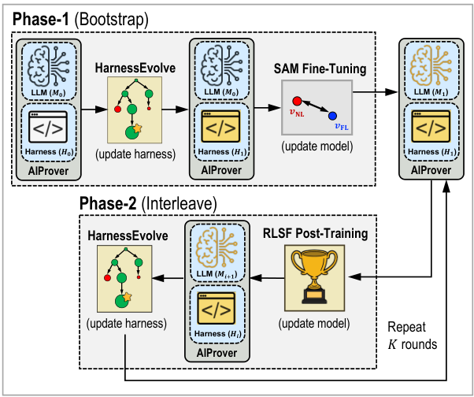
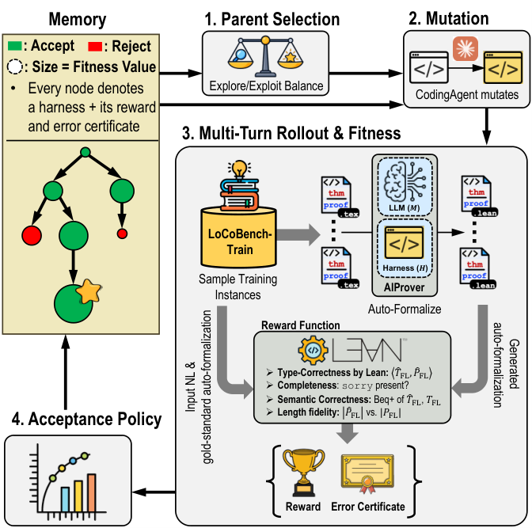

Builds an agentic system that autoformalizes research-level natural-language theorems and proofs into Lean 4, and introduces the LoCoBench dataset drawn from Mathlib, CSLib, and Mizar.
Abstract
Proof auto-formalization translates natural-language (NL) theorems and proofs into a formal language (FL) such as Lean, enabling mechanical verification. Despite rapid progress, research-level proofs often depend on concepts missing from leading proof assistant libraries (e.g., Lean's Mathlib), and successful compilation does not guarantee that a translation preserves the theorem's meaning or the proof's reasoning. Furthermore, aligned NL-FL training data are scarce, and leading agents often rely on costly frontier models and manually engineered harnesses. To address the above issues, we present AIProver, an agentic framework for autonomous proof auto-formalization and proof synthesis (AFPS) that jointly post-trains a 119B open-weight language model and evolves its agentic, tool-calling harness with HarnessEvolve. Verifiers assess type correctness, proof completeness, and semantic correctness, returning rewards and diagnostic certificates that drive model fine-tuning and alternating reinforcement learning via symbolic feedback and HarnessEvolve, a certificate-driven evolutionary search over the whole harness control flow that re-tailors the harness to the updated model. For research-level training and evaluation, we introduce LoCoBench, 58.9k instances from Mathlib, CSLib, Mizar Math Library, and a bounded-arithmetic textbook, with a 771-instance validation split whose theorem-proof pairs have no public Lean formalization. Against 39 frameworks spanning AFPS agents, frontier LLMs, and coding agents, AIProver lifts pass@4 semantic correctness over its Leanstral-1.5 base from 15.7% to 36.7% and outperforms every other open-weight system and Aristotle. As a Claude Code and Codex skill, it lifts their semantic correctness from 41.9% and 34.1% to 79.8% and 62.4%, respectively. Further, it is also 24% cheaper than Numina-Lean-Agent, pushing the accuracy-cost frontier of research-level AFPS.
Problem
Research-level proofs often depend on concepts missing from Mathlib. A Lean proof that compiles may still not preserve the meaning of the original theorem or proof. Aligned NL–FL training data are scarce, and existing agents depend on expensive frontier models and hand-built harnesses.
Approach
AIProver post-trains a 119B open-weight model (Leanstral-1.5) and evolves its tool-calling harness. The model is first fine-tuned with a contrastive objective (SAM) that aligns NL and Lean representations. Verifiers check type correctness, proof completeness, and semantic correctness, and return graded rewards plus diagnostic certificates. These signals drive two steps that alternate across rounds: reinforcement learning from symbolic feedback, and HarnessEvolve, an evolutionary search over the harness control flow. Training and evaluation use LoCoBench, with 58.9k instances from Mathlib, CSLib, Mizar, and a bounded-arithmetic textbook; its 771-instance validation split has no public Lean formalization.

(b) Overall post-training loop of AIProver

(d) HarnessEvolve search
Results
Pass@4 semantic correctness rises from 15.7% for the Leanstral-1.5 base to 36.7%, outperforming every other open-weight system and Aristotle among 39 compared frameworks. Used as a skill, AIProver raises semantic correctness for Claude Code from 41.9% to 79.8% and for Codex from 34.1% to 62.4%. AIProver is also 24% cheaper than Numina-Lean-Agent.
System
TC
TC+SC (w/ or w/o sorry)
TC+SC (full proofs)
Leanstral-1.5-119B-A6B (w/ tools)
27.4
12.6
12.6
Aristotle
43.2
18.5
18.4
OpenGauss (w/ Leanstral-1.5)
57.3
22.2
21.5
AIProver-Baseline w/ HarnessEvolve
84.4
28.7
22.6
Overall pass@4 (%) on LoCoBench-Val (n=771), selected systems